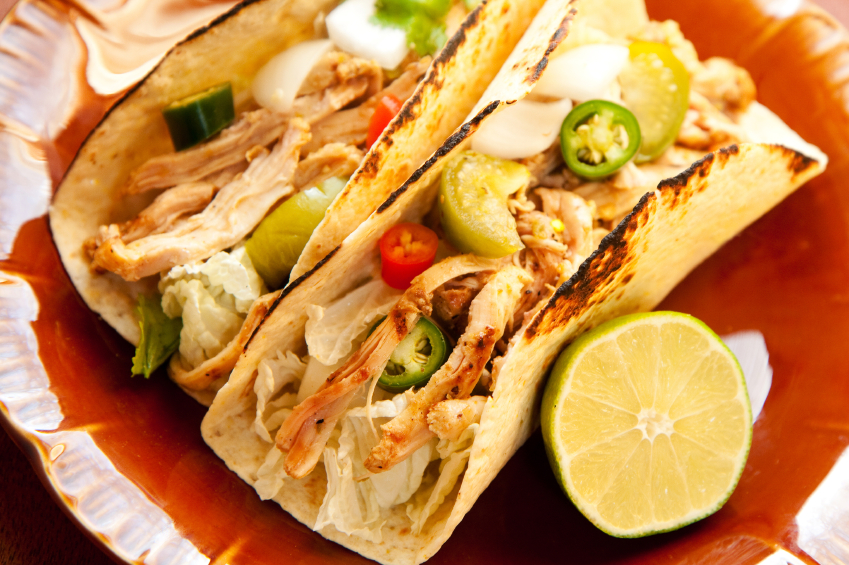
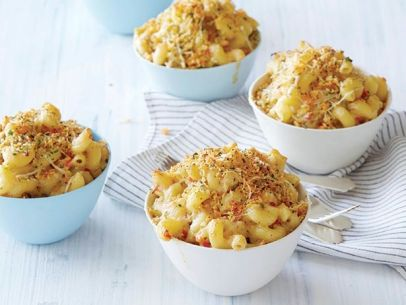
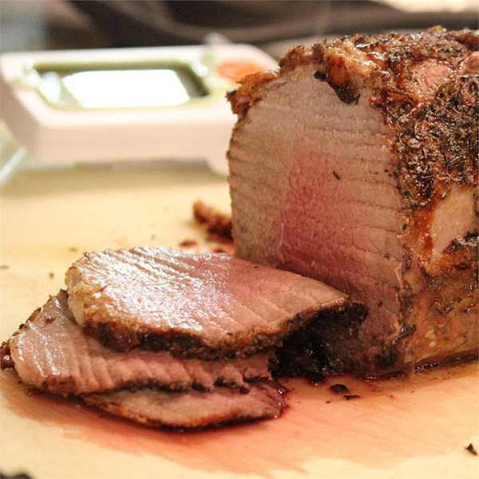

Chicken Tacos with Chipotle Crema

Recipe Indgredients
- 1 Pound boneless skinless chicken thighs
- 3 Garlic cloves
- 1 Medium white onion
- 3 To 4 thyme sprigs
- 1 1/2 Teapsoons smoked paprika
- 1 1/2 Teaspoons cumin
- 1 Teaspoon salt
- 1/2 Teaspoon ground white pepper
- 1/2 Teaspoon ground white pepper
- Olive oil
- 1/2 Cup sour cream
- 3 Tablespoons half-and-half
- 2 Tablespoons adobo sauce
- 1 Teaspoon honey
- Juice of 1 lime
- Salt
- Corn Tortillas
- Shredded Cabbage
- Diced Avocado
- Lime Wedges
- Queso Fresco
- Pickled Jalapenos
Recipe Vitals
- Cook time 30-35 minutes
- Preparation Time 90 minutes
- Serving Size: Two People
Crab Cake Mac N Cheese

Recipe Ingredients
- Salt
- 1 Pound cavatappi or elbow pasta with lines on conchiglie (small fat tube/shell shaped pasta with lines)
- 2 Tablespoons extra-virgin olive oil
- 6 Tablespoons of Butter
- 3 Ribs celery with leafy tops, finely chopped
- 1 Medium onion, finely chopped
- 1/2 Small red bell pepper, seeded and finely chopped
- 3 To 4 cloves of garlic, finely chopped
- 1 Bay leaf
- About 2 tablespoons freshly chopped thyme leaves, several sprigs
- About 1 tablespoon grated lemon zest
- Freshly ground black pepper
- 3/4 Pound fresh lump crabmeat picked for shells and flaked
- 1 Tablespoon seafood seasoning (recommended: Old Bay)
- 3 Tablespoons all-purpose flour
- 2 1/2 Cups milk
- Freshly grated nutmeg, to taste
- 1 Tablespoon Dijon mustard
- 1/3 Pound, about 1 rounded cup grated sharp with Cheddar
- 1/3 Pound, about 1 rounded cup shredded Gruyere or Swiss cheese
- 3 Tablespoons hot sauce (recommended: Frank's Red Hot)
- 1 Cup panko bread crumbs
- A genrous handful flat-leaf parsley, finely chopped
- 1/2 Cup grated Parmigiano-Reggiano cheese, a couple of handfuls
- Cooking Time: 40 minutes
- Preparation Time: 30 minutes
- Serving Size: 4 to 6 people
All American Roast Beef

Recipe Ingredients
- 3 Pounds beef eye of round roast
- 1/2 Teaspoon kosher salt
- 1/2 Teaspoon garlic powder
- 1/4 Teaspoon freshly ground black pepper
- Cooking Time: 60 minutes
- Preparation Time: 5 minutes
- Serving Size: 6 people